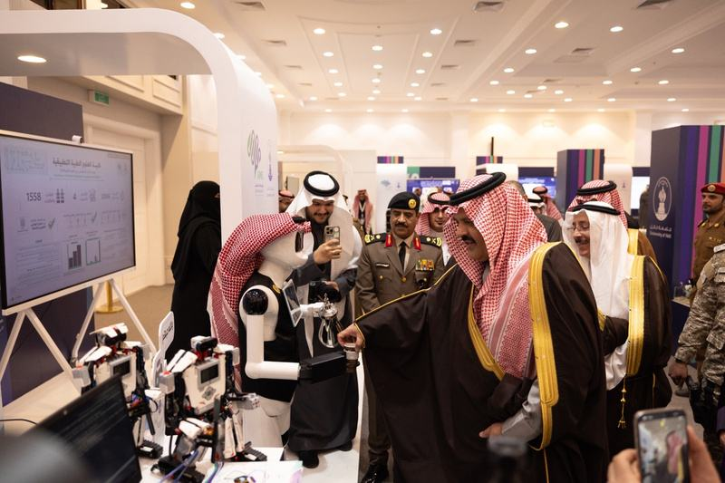
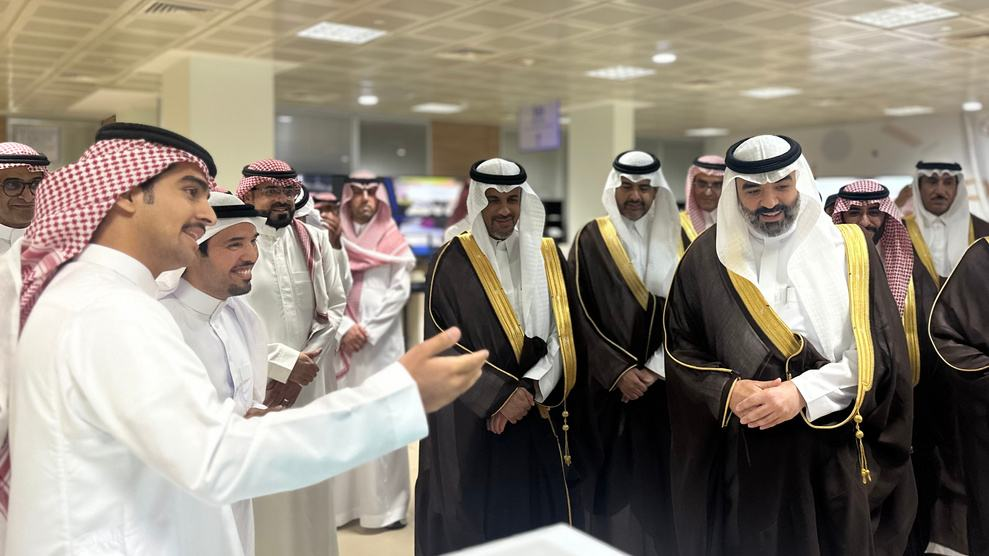
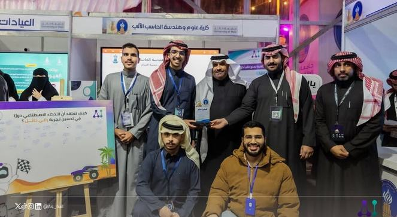
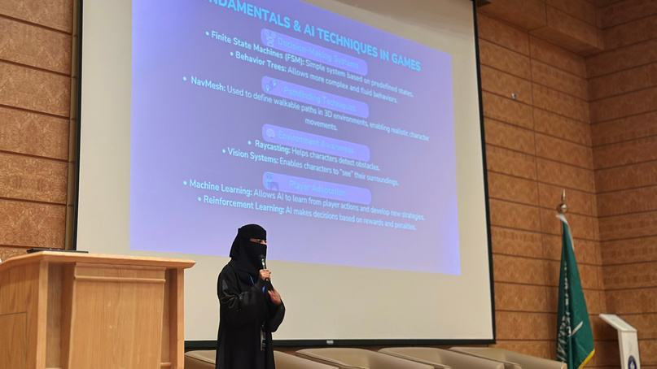
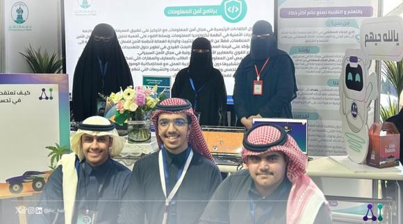
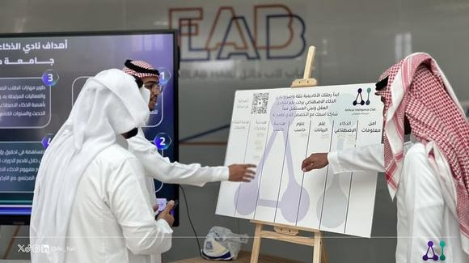

مجتمع
نقطة الانطلاق والانتماء؛ جلسات أسبوعية وتقييم يوجّهك لمسارك.
من المعرفة الأساسية إلى التطبيق العملي، وصولاً إلى مشروع حقيقي وفرصة مهنية.
نُمكّن العقول، نبني المستقبل.
عن المبادرة
شباب حائل يستخدمون الذكاء الاصطناعي كل يوم، لكن تنقصهم البيئة المحلية التي تحوّل المهارة إلى مشاريع وفرص: لا توجيه محلي، لا فرص تطبيقية، والفرص القوية مركّزة في المدن الكبرى. نحن الجسر المحلي الذي يسدّ هذه الفجوة.
ما نقدّمه
نقطة الانطلاق والانتماء؛ جلسات أسبوعية وتقييم يوجّهك لمسارك.
تدريب متخصص حسب مجالك ينتهي بمشروع حقيقي ومحفظة مهنية، وربط بالفرص.
تحديات حقيقية من جهات المنطقة تحوّل مهارتك إلى أثر ملموس.
نستكشف آفاقاً جديدة ونتقدم بحلول مبتكرة.
نمكّن الأفراد بالمعرفة والمهارات الذكية.
نحو تأثير حقيقي يحدث فرقاً مستداماً.
من حائل
بين جبال أجا ورمال النفود، منطقة شابة تمتلك الطاقة والموهبة. ما ينقصها ليس القدرة، بل البيئة التي تحوّل هذه الطاقة إلى إنتاج. صقل تُبنى هنا، ولأهل هنا.
سجلّنا
قبل أن تصبح صقل مبادرة، كان الفريق نفسه يبني على الأرض في حائل. هذه حصيلة عام واحد من العمل.
نشاط ومبادرة خلال عام
زائر وحضور في فعاليات المنطقة
إنجاز وجائزة محلية ووطنية
دورة تدريبية متخصصة
عضو ومتطوع في ستة فرق
حضور في LEAP وGAIN ورالي حائل ومؤتمر الصحة العالمي
تمثيل المنطقة في المحافل الوطنية
لمحات من العمل على الأرض






ما نستهدفه
نبني منظومة محلية تنقل الشباب من الوعي إلى الإنتاج.
مستفيد
مسارات تخصصية
مشروع حقيقي
ربط بالفرص
تدريب وتوظيف ومشاريع
نعمل على بناء شراكات مع
سجّل اهتمامك وسنتواصل معك عند فتح التسجيل في الجلسات والمسارات القادمة.
من المعرفة إلى التطبيق إلى الفرصة.